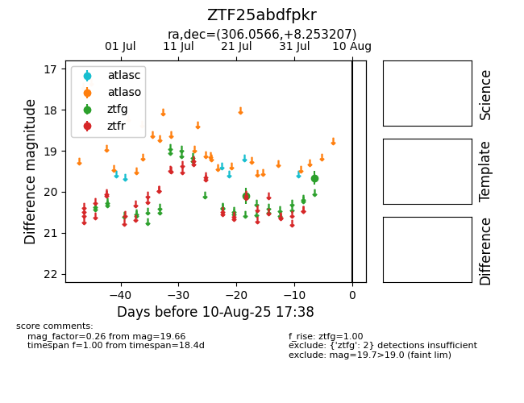

Target ZTF25abdfpkr at 2025-08-10 18:49, see:
FINK: fink-portal.org/ZTF25abdfpkr
Lasair: lasair-ztf.lsst.ac.uk/objects/ZTF25abdfpkr
ALeRCE: alerce.online/object/ZTF25abdfpkr
alt names
ZTF25abdfpkr (ztf,fink)
coordinates:
equatorial (ra, dec) = (306.0566,+8.25321)
galactic (l, b) = (51.4968,-16.34837)
photometry
last ztfg=19.66
2 ztfg detections
